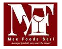

Mac Foods(Minkoumou Actions for Foods) est une entreprise Camerounaise développer
en 2020 qui excelle dans la fabrication des boissons avec et sans alcool très délicieux.
Nous concentrons nos efforts dans la production du vin et du jus de fruits.
Genèse de l'idée (Success story)
L'idée est venue du constat selon lequel une grande quantité d'oseille est cultivée
au Cameroun sans être valorisé, la seule transformation se limite à la fabrication
des jus vendus à 100f dans le quartier, de plus la plus grande part de la production
est vendu aux étrangers à vil prix et ceci ne contribuant pas à l'économie Camerounaise
et au développement local. Deuxièmement, le Cameroun importe le vin et d'autres boissons
à hauteur de 200 milliards chaque année ce qui fragilise l'économie. C'est alors qu'en 2019
le premier produit est fabriqué et commercialisé sous la marque "le bon augustin"
et via les boutiques made in Cameroun.
L'Historique de l'entreprise
- Octobre 2019 : L'entreprise engage une qualité à AB certification Afrique
subsaharienne pour obtenir le label OCC (Origine Cameroun certifié)
- 10 Janvier 2020 : L'entreprise est enregistrée à la mairie de Douala 3ème
- Juillet 2020 : L'entreprise est sélectionnée pour participer au séminaire de formation en
entrepreneuriat organisé par le ministère des PME grâce à l'agence des nations unies pour le développement
(ANUD) à Yaoundé et obtient sa certification sur les 19 entreprises retenues.
- 20 Septembre 2020 : L'entreprise est formalisée en SARL et basée à PK15.
- 20 Novembre 2020 : L'entreprise est délocalisée dans son nouveau secteur
à Yassa GOAM dans le 3ème arrondissement.
- 24 Novembre 2020 : L'entreprise apparaît ou est publiée sous la vitrine de
Cameroun Tribune grâce à sa participation à la foire d'exposition organisée par le ministère
des PME à la salle des fêtes d'Akwa où elle obtient un certificat de participation.
- 08 Juin 2021 : L'entreprise est invitée par la SOPECAM à participer aux
Champions CBT (Cameroun Business Today) du made in Cameroun.
- 20 Juin 2021 : L'entreprise est sélectionnée parmi les 30 entreprises
Camerounaises retenues pour le programme CAMPACK Q pour un accompagnement à la certification et à
la mise à jour de site suivant une démarche qualité.
- 28 Juin 2021 : L'entreprise participe au café de normalisation organisé par l'agence de normalisation
et de la qualité (ANOR) pour une session de formation dans les BPH agroalimentaire pour le secteur des jus, vins et liqueurs.
- 05 Juillet 2021 : L'entreprise participe au salon international de l'agriculture et de l'agroalimentaire
(SIALI) au musée national à Yaoundé et obtient le diplôme d'excellence numéro 1 de la foire.
- 27 Juillet 2021 : L'entreprise est sélectionnée par le programme des nations unies pour le développement
pour une formation entrepreneuriale et une subvention.
| Raison Sociale |
MAC FOODS SARL |
| Logo usuel |
 |
| Date de création |
20 Septembre 2020 |
| Date de démarrage des activités |
Novembre 2019 |
| Statut juridique |
SARL |
| Capital Social |
200 000 F |
| Adresse siège sociale et usine |
Ecole ébène yassa Cameroun |
| Tel/e-mail |
+237 6 99 77 68 46 / +237 6 70 78 68 46
macfoods@gmail.com
|
| Registre commerce |
N° RCCM RC/DLA/2020/B/4643 |
| Contribuable |
M092015125437A |
| Activités principales |
Production et commercialisation des boissons alcoolisées et non alicoolisées
made in Cameroun
|
| Effectif actuel |
6 |
| Régime spéciale |
Simplifié |